Journey Bible Church Ministry Highlight
Bruce and Joe sat down with Journey Bible Church for an interactive dialogue on Worship Wagon, where it started, and the impact the weekly church service has on the homeless community in downtown Kansas City.
Bruce and Joe sat down with Journey Bible Church for an interactive dialogue on Worship Wagon, where it started, and the impact the weekly church service has on the homeless community in downtown Kansas City.
In 2016, CBN News visited Worship Wagon and put together a special report on the ministry.
A discussion on the history, purpose, and vision for the Worship Wagon ministry.
Bill Wilting was the very first music leader at the inaugural service in November of 2014. We miss him dearly.
Steve brings a creative style, often mixing familiar melodies with unexpected lyrics and bluesy harmonica.
Bruce often shares that his favorite worship music leader of all time is Linda, who also happens to be his lovely bride.
Tom on guitar was one of our longest-standing volunteers, faithfully serving with us for several years.
Brandon from Journey Bible Church gave us a wonderful rendition of Amazing Grace.
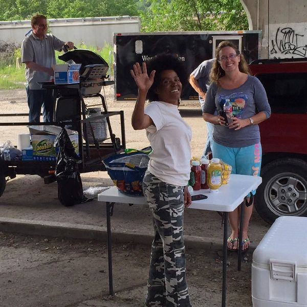

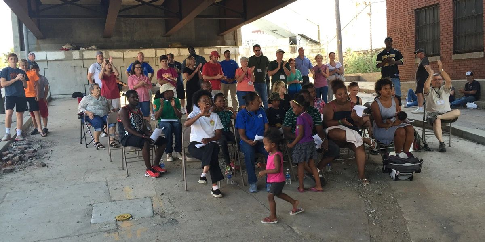
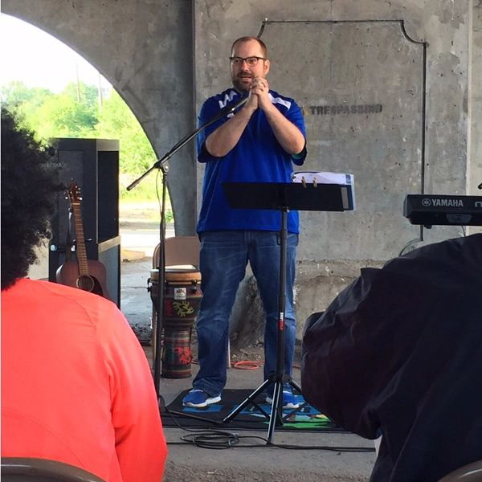
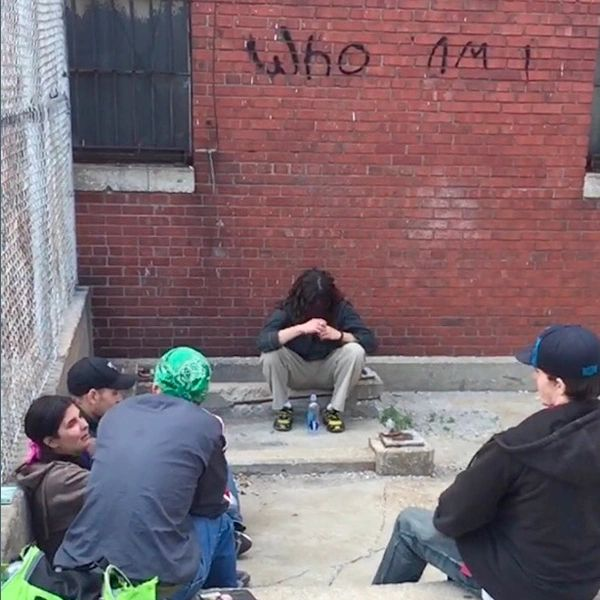
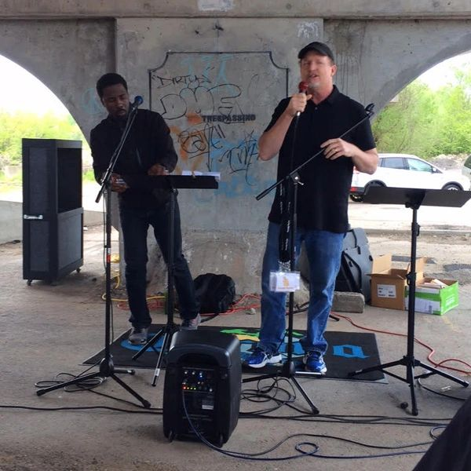
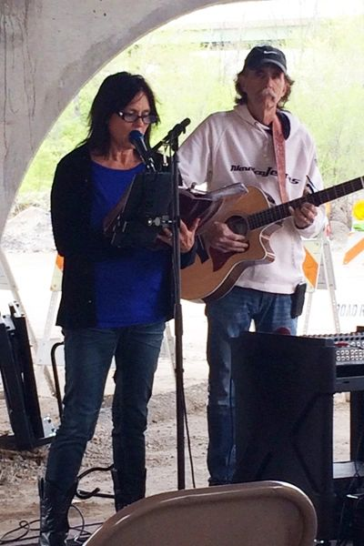
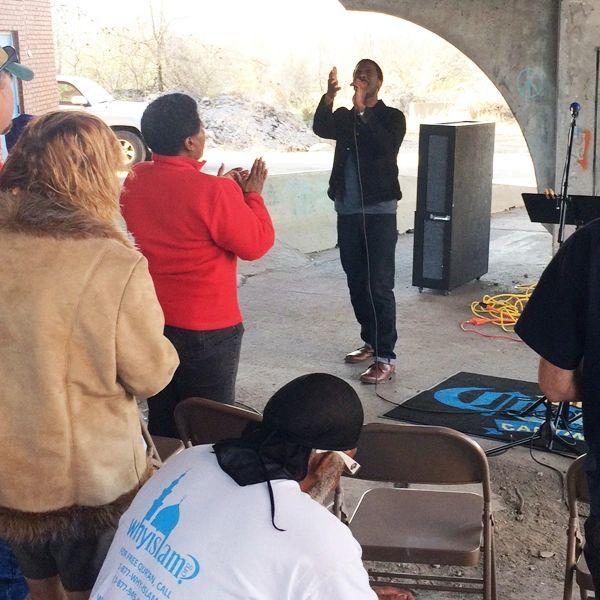
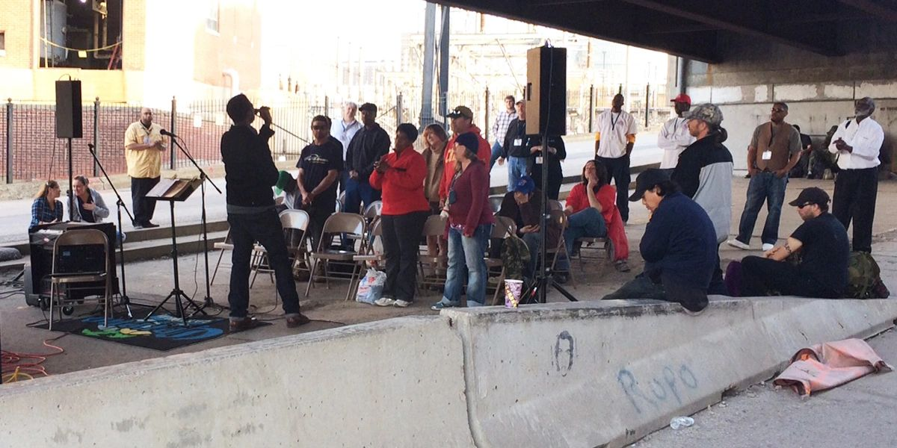
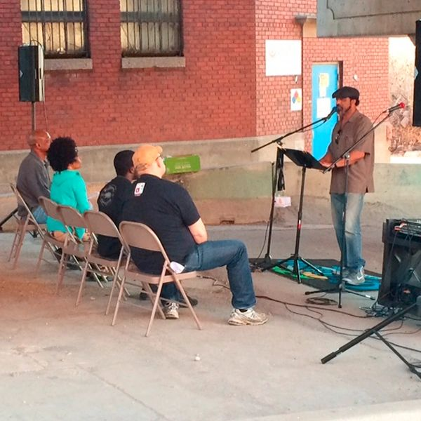
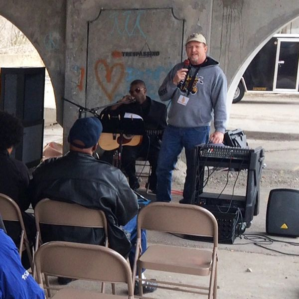
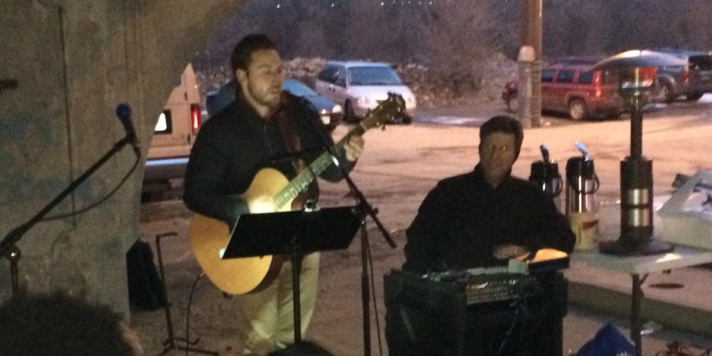
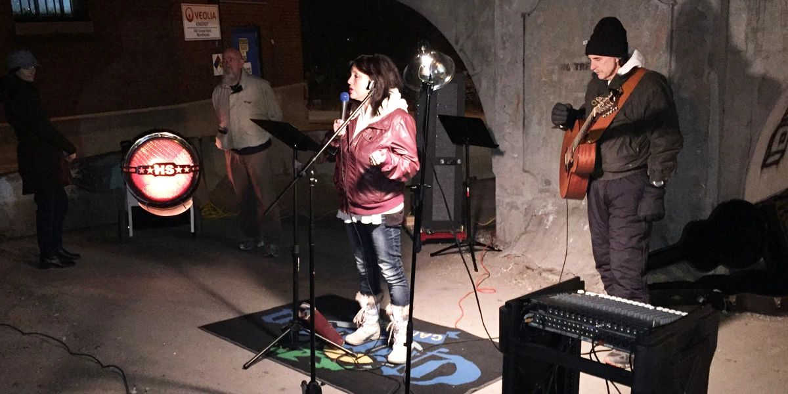
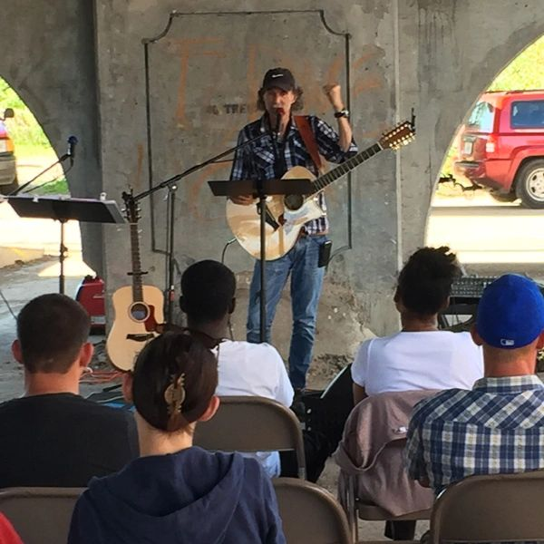
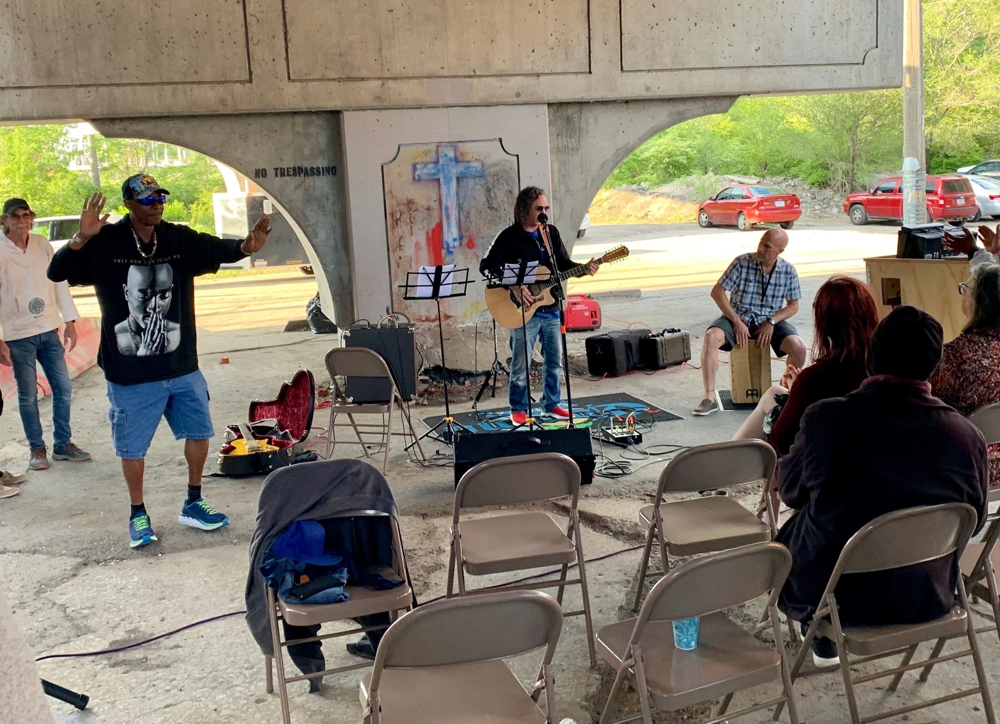
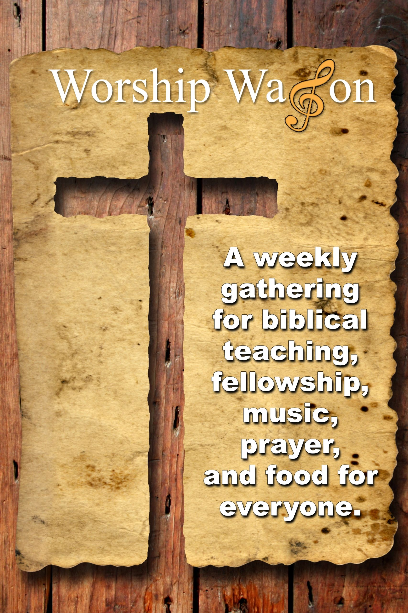